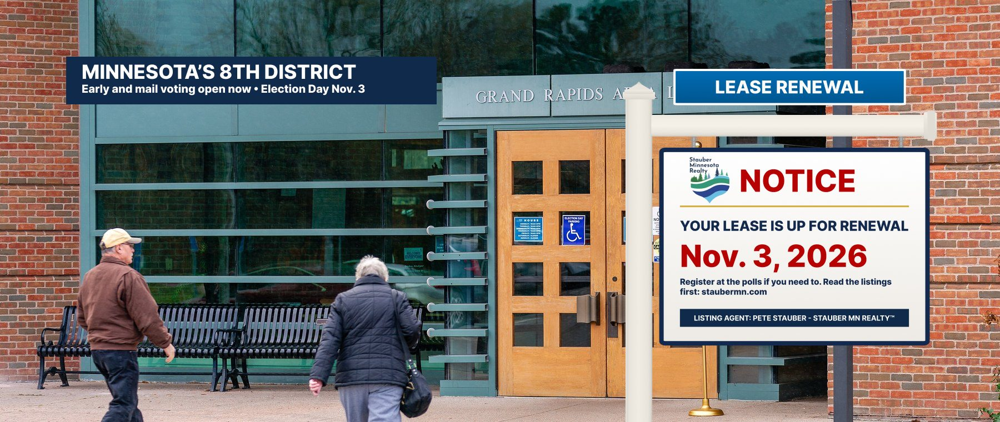

Your lease is up for renewal.
The current listing agent’s term expires January 3, 2027. Tenants decide whether to renew on Tuesday, November 3, 2026 — and in Minnesota you don’t have to wait until then.
All links go to the Minnesota Secretary of State. Stauber MN Realty is satire; the dates and rules below are not.
Four ways to sign (or not sign) the lease
Official rules from the Minnesota Secretary of State.
Check your registration
Register or update your address online until 11:59 p.m. on Tuesday, Oct. 13 (21 days before the election). Missed it? Minnesota has same-day registration at your polling place.
Register onlineVote early in person
Vote in person at your county or city election office starting Friday, Sept. 18. From Friday, Oct. 16 through Monday, Nov. 2, you feed your ballot straight into the counter, just like Election Day. You can register there with proof of residence.
Early-voting locationsVote by mail
Apply online — no need to register first. Ballots began mailing Sept. 18. A witness (any U.S. citizen 18+, or a notary) must sign your envelope. Your ballot must be returned by Tuesday, Nov. 3; mail it early or drop it off.
Heard mail voting changed? Not for this election: on Sept. 15 the U.S. Supreme Court left in place the court order freezing the March 2026 executive order on mail ballots (Votebeat).
Request a ballotVote on Nov. 3
Polls are open 7 a.m. to 8 p.m. (some small towns open as late as 10 a.m.). If you’re in line by 8 p.m., you can vote. Minnesota law lets you take time off work to vote without losing pay.
Find your polling placeTenant FAQ
Registering at the polls? Bring one proof of residence: a Minnesota driver’s license, permit, state ID or tribal ID with your current address; or a photo ID plus a current bill, lease or similar document showing your address; or a registered voter from your precinct who can vouch for you. The full list is on the Secretary of State’s Election Day registration page.
Moved since the last election? Update your registration, or re-register at your new polling place.
Past felony conviction? If you are not currently incarcerated, you have the right to vote in Minnesota.
Already mailed a ballot? Track it here.
Questions? Minnesota Secretary of State elections line: 1-877-600-8683 (Greater Minnesota) or 651-215-1440.
Read the listing
The highlights of the agent’s portfolio. Each tile links to the sourced listing.
Questions every tenant should ask before renewing
Ask them of any candidate. We’re a realty firm, not a campaign, and we are not affiliated with one.
- Did the agent vote to renew my health-plan assistance?
Check the Premium Hike Townhome.
- Who is paying for the federal cost shifts?
Check The Special Assessment and your county’s Truth-in-Taxation notice in November.
- Will the agent meet with me in person?
See Where’s Pete? Then call (218) 481-6396 and ask.
- What did the agent do with the Boundary Waters?
The deed is on file: Boundary Waters.